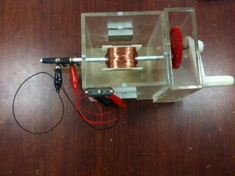

Engage:
Question: Given the context of global energy crisis, fossil fuel as primary source of energy and its effects of global warming, are you aware of any alterative energy source?
Possible student responses: Many students probably already know of clean energy and able to verbally mention some of them such as wind and wave energy.
Answer: Yes! Wind energy and wave energy are examples of energy sources that convert mechanical sources of energy and convert it to electrical energy. Later, we will demonstrate a way to convert human mechanical energy in the form of rotating an axle to rotate a coil so as to get electrical energy.
A real live demo is best.

Figure of a Real Life Demo Set by AddeStation Dr KC Tan
Explore
1. Explore the simulation; this simulation is designed as an electric
generator
that turns motion into alternating-current electric power by exploiting
electromagnetic
induction. This AC generator model consists of 2 pole magnets and a
wire
(usually a very long one that's wrapped to form several coils and known
as an
armature or coil). A hydraulic
engine or some other outside source of motion (This applet has a handle
bar for
you to rotate) moves the wire or armature through the external magnetic
field
created by the magnets.
2 The play button runs the simulation, click it again to pause and the
reset
button brings the simulation back to its original state.
3 by default values Bz, Lengthx, Lengthz, N, R, ϑ
= 6.2831*t play the simulation.
Notice ϑ = 6.2831*t is the
angular displacement function of the
handle bar. The wire is in a rotation motion and the galvanometer
display the
induced current in the AC generator. What is the physics principle
simulated
here.
Hint: Faraday's law
4 reset the simulation.
5 using the default values (Bz, Lengthx, Lengthz, N, R,), adjust the
value of ϑ = 1*t play the simulation. What did you observe?
Explain
the motion in terms of the ϑ,
ω
6 explore the slider Bz. what do this slider control?
7 explore the slider Lengthx. What does this slider control?
8 explore the slider Lengthz. What does this
slider control?
9 together a variable called A is defined as Lengthx*Lengthz, suggest a
suitable meaning for A.
10 by leaving the cursor on the slider, tips will
appear to
give a description of the slider. You can try it the following sliders
such as
the N, R, t, Φ , ε , i, v.
11 record down the names of the variables and its meaning from the tips.
9 there are some value of time of simulation t and
the
checkbox graph for height vs time.
10 vary the simulation and get a sense of what it does.
11 There is an external magnet
with the
poles as setup in the z axis direction.
What are the magnetic poles when Bz is positive?
|
Top: |
12 What can you conclude about the directions of the magnetic field
exerted by
the magnets?
hint: the magnetic field vectors comes out from which pole when view from outside the magnet.
|
|
13 The external magnetic field Bz can be varied using the slider Bz.
When Bz is
positive, it is in the direction vertically up. Vary Bz until it is
negative,
what is the direction of the Bz then?
|
|
Evaluate:
14 Input into the input field θ(t) = __6.2832*t___
When θ = 0o What is amount of magnetic flux Φ passing
through the area of the coil loop is zero Wb.
15 Step the simulation by dt, take note of the new value of the θ and
the new Φ reading. By calculating d(Φ)/ dt,
at this instant in time. Think of a way, to collect the data to fill in
the
following table.
|
θ / deg. |
t / s |
Φ / Wb |
d(Φ)/ dt / Wb/s |
to be read from the graph |
|
|
0 |
|
|
|
|
|
|
18 |
|
|
|
|
|
|
36 |
|
|
|
|
|
|
54 |
|
|
|
|
|
|
72 |
|
|
|
|
|
|
90 |
|
|
|
|
|
|
108 |
|
|
|
|
|
|
126 |
|
|
|
|
|
|
144 |
|
|
|
|
|
|
162 |
|
|
|
|
|
|
180 |
|
|
|
|
|
|
198 |
|
|
|
|
|
|
216 |
|
|
|
|
|
|
234 |
|
|
|
|
|
|
252 |
|
|
|
|
|
|
270 |
|
|
|
|
|
|
288 |
|
|
|
|
|
|
306 |
|
|
|
|
|
|
324 |
|
|
|
|
|
|
342 |
|
|
|
|
|
Select the Checkbox "Show Graph" and record down
the value of the emf ε. Suggest a relationship between emf ε and the
variables
in the table. Collect more data to fill in the table if need.
Elaborate:
16 The following passage (just an example) aims to
aid
learners describe a simple form of a.c.
generator (rotating
coil or rotating magnet) and the use of slip rings (where needed)
When a coil is _______________ between the poles
of the
___________, its wires cut through the _______________ causing an
induced emf
to be generate which causes a ____________ to flow if there is a closed
electrical path circuit.
The _________ and ______________ of the induced
current _____________
as the coil rotates. This is the basic principle behind the simple AC
generator.
(c) Sketch a graph of voltage output against time
for a
simple a.c. generator
Using default starting values of the simulation, play the simulation
until at θ
= 0 degree again at t > 0.0 s
What is the direction of the current flow in wire AB?
What is the direction of the current flow in wire CD?
using Fleming's left-hand rule, deduce the relative directions of force acting on
i) AB
ii) CD
iii) BC
iv) DA.
Hint: note that Fmag
= I*B*L*sin(I&B) may be useful.
By taking moments about the axle PQ, consider the forces on AB and CD,
deduce
the direction of the torque T and the motion if the coil loop was
initially at
rest (ω = 0 deg/s). Select the suitable sliders of your choice and
verify your
hypothesis for 2 angles.
Discuss with your partner what you have discovered.
Ask your teacher if there are any problem/issues
faced using
this virtual lab.
Explain and show the equations involving T ( in earlier part of
question), why
the forces on wire BC and DA did not contribute to the calculation of
rotating
torque about axle PQ?
By considering the forces in the x direction for wire BC and DA,
suggest what
can happen to the coil loop if the forces are large enough.
Suggest why
it does not happen in terms of the properties of the wires in the
coil
loop.
Explain how a rotating coil in a magnetic field experiences a change in
magnetic flux linkage and the induced emf.
What is the effect on the induced emf by increasing
(i) the number of turns on the coil, N
(ii) the angular velocity, ω
(iii) the magnitude of the external Bz field.
After conducting some inquiry learning and examining the 3D view of the
model
on the virtual AC generator model discuss how this induced emf can be
measured.
You may right-click within a plot, and select "Open EJS Model" from
the pop-up menu to examine the model equations of the motion. You must,
of
course, have EJS installed on your computer.
Describe the action of the slip rings of the AC generator. Suggest the
effect
of adding a soft-iron cylinder in the winding the coil.
Advanced Learner:
Please submit your remix model that model features that are not
available in
the existing virtual lab and share your model with the world through
NTNUJAVA
Virtual Physics Laboratory
http://www.phy.ntnu.edu.tw/ntnujava/index.php?board=28.0. Impacting the
world
with your model now.